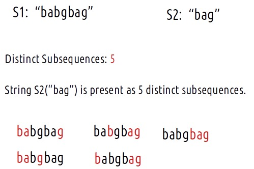
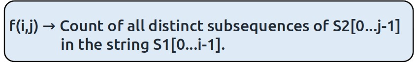
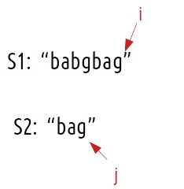
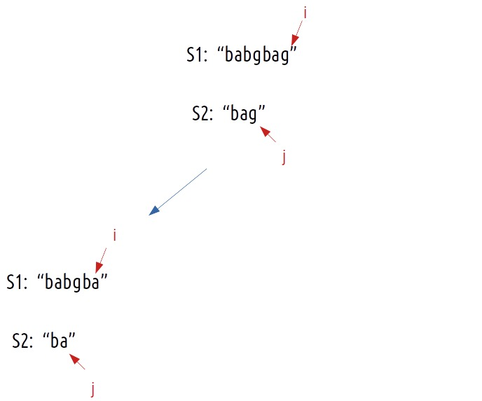
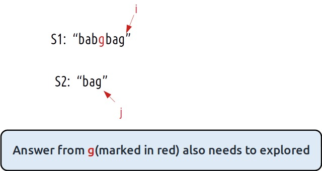
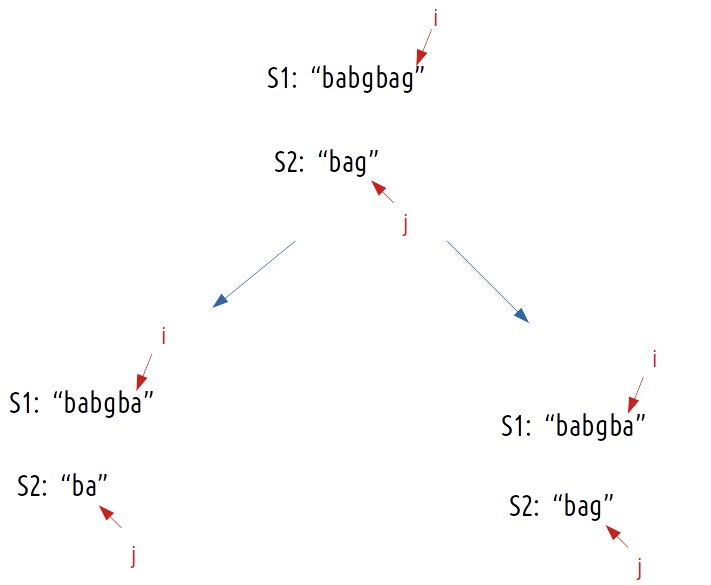
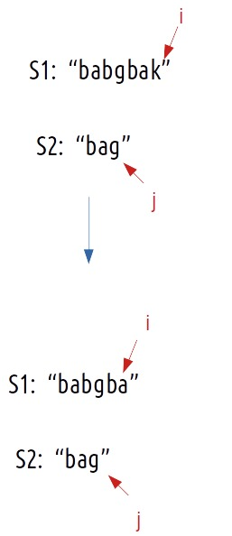
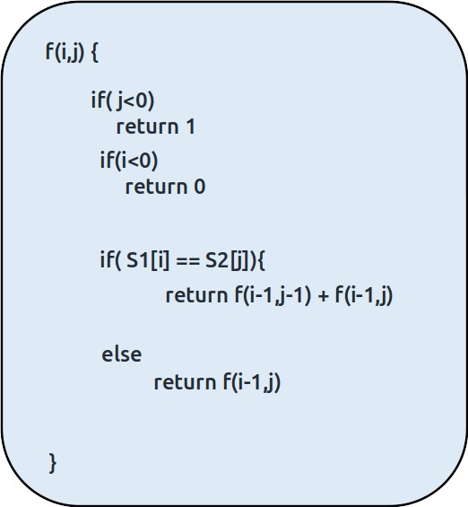
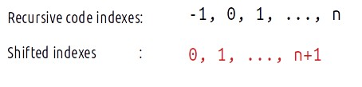
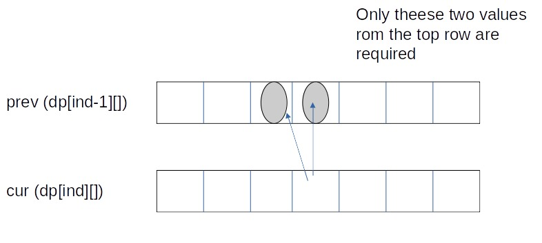

Problem Statement: Distinct Subsequences
Problem Link: Subsequence Counting
We are given two strings S1 and S2, we want to know how many distinct subsequences of S2 are present in S1.
Examples
Example: 

Disclaimer: Don’t jump directly to the solution, try it out yourself first.
Memoization Approach
Algorithm / Intuition
We have to find distinct subsequences of S2 in S1. As there is no uniformity in data, there is no other way to find out than to try out all possible ways. To do so we will need to use recursion.
Steps to form the recursive solution:
We will first form the recursive solution by the three points mentioned in the Dynamic Programming Introduction.
Step 1: Express the problem in terms of indexes.
We are given two strings. We can represent them with the help of two indexes i and j. Initially, i=n-1 and j=m-1, where n and m are lengths of strings S1 and S2. Initially, we will call f(n-1,j-1), which means the count of all subsequences of string S2[0…m-1] in string S1[0…n-1]. We can generalize it as follows:

Step 2: Try out all possible choices at a given index.
Now, i and j represent two characters from strings S1 and S2 respectively. We want to find distinct subsequences. There are only two options that make sense: either the characters represented by i and j match or they don’t.
Case 1: When the characters match
if(S1[i]==S2[j]), let’s understand it with the following example:

S1[i] == S2[j], now as the characters at i and j match, we would want to check the possibility of the remaining characters of S2 in S1 therefore we reduce the length of both the strings by 1 and call the function recursively.

Now, if we only make the above single recursive call, we are rejecting the opportunities to find more than one subsequences because it can happen that the jth character may match with more characters in S1[0…i-1], for example where there are more occurrences of ‘g’ in S1 from which also an answer needs to be explored.

To explore all such possibilities, we make another recursive call in which we reduce the length of the S1 string by 1 but keep the S2 string the same, i.e we call f(i-1,j).

Case 2: When the characters don’t match
if(S1[i] != S2[j]), it means that we don’t have any other choice than to try the next character of S1 and match it with the current character S2.

This can be summarized as :
- if(S1[i]==S2[j]), call f(i-1,j-1) and f(i-1,j).
- if(S1[i]!=S2[j]), call f(i-1,j).
Step 3: Return the sum of choices
As we have to return the total count, we will return the sum of f(i-1,j-1) and f(i-1,j) in case 1 and simply return f(i-1,j) in case 2.
Base Cases:
We are reducing i and j in our recursive relation, there can be two possibilities, either i becomes -1 or j becomes -1.
- if j<0, it means we have matched all characters of S2 with characters of S1, so we return 1.
- if i<0, it means we have checked all characters of S1 but we are not able to match all characters of S2, therefore we return 0.
The final pseudocode after steps 1, 2, and 3:

Steps to memoize a recursive solution:
If we draw the recursion tree, we will see that there are overlapping subproblems. In order to convert a recursive solution the following steps will be taken:
- Create a dp array of size [n][m]. The size of S1 and S2 are n and m respectively, so the variable i will always lie between ‘0’ and ‘n-1’ and the variable j between ‘0’ and ‘m-1’.
- We initialize the dp array to -1.
- Whenever we want to find the answer to particular parameters (say f(i,j)), we first check whether the answer is already calculated using the dp array(i.e dp[i][j]!= -1 ). If yes, simply return the value from the dp array.
- If not, then we are finding the answer for the given value for the first time, we will use the recursive relation as usual but before returning from the function, we will set dp[i][j] to the solution we get.
Code
#include <bits/stdc++.h>
using namespace std;
const int prime = 1e9 + 7;
// Function to count the number of distinct subsequences of s2 in s1
int countUtil(string s1, string s2, int ind1, int ind2, vector<vector<int>>& dp) {
// If s2 has been completely matched, return 1 (found a valid subsequence)
if (ind2 < 0)
return 1;
// If s1 has been completely traversed but s2 hasn't, return 0
if (ind1 < 0)
return 0;
// If the result for this state has already been calculated, return it
if (dp[ind1][ind2] != -1)
return dp[ind1][ind2];
int result = 0;
// If the characters match, consider two options: either leave one character in s1 and s2
// or leave one character in s1 and continue matching s2
if (s1[ind1] == s2[ind2]) {
int leaveOne = countUtil(s1, s2, ind1 - 1, ind2 - 1, dp);
int stay = countUtil(s1, s2, ind1 - 1, ind2, dp);
result = (leaveOne + stay) % prime;
} else {
// If characters don't match, just leave one character in s1 and continue matching s2
result = countUtil(s1, s2, ind1 - 1, ind2, dp);
}
// Store the result and return it
dp[ind1][ind2] = result;
return result;
}
// Function to count the number of distinct subsequences of s2 in s1
int subsequenceCounting(string &s1, string &s2, int lt, int ls) {
vector<vector<int>> dp(lt, vector<int>(ls, -1));
return countUtil(s1, s2, lt - 1, ls - 1, dp);
}
int main() {
string s1 = "babgbag";
string s2 = "bag";
// Call the subsequenceCounting function and print the result
cout << "The Count of Distinct Subsequences is " << subsequenceCounting(s1, s2, s1.size(), s2.size());
return 0;
}
import java.util.*;
class TUF {
static int prime = (int) (Math.pow(10, 9) + 7);
// Function to count the number of distinct subsequences of s1 that are equal to s2
static int countUtil(String s1, String s2, int ind1, int ind2, int[][] dp) {
// If we have exhausted s2, there's one valid subsequence (empty string) in s1.
if (ind2 < 0)
return 1;
// If we have exhausted s1 but not s2, there are no valid subsequences.
if (ind1 < 0)
return 0;
// If the result is already computed, return it.
if (dp[ind1][ind2] != -1)
return dp[ind1][ind2];
// If the characters at the current positions match, we can either leave one character from s1
// or continue to the next character in s1 while staying at the same character in s2.
if (s1.charAt(ind1) == s2.charAt(ind2)) {
int leaveOne = countUtil(s1, s2, ind1 - 1, ind2 - 1, dp);
int stay = countUtil(s1, s2, ind1 - 1, ind2, dp);
// Add the two possibilities and take modulo prime to avoid integer overflow.
return dp[ind1][ind2] = (leaveOne + stay) % prime;
} else {
// If the characters don't match, we can only continue to the next character in s1.
return dp[ind1][ind2] = countUtil(s1, s2, ind1 - 1, ind2, dp);
}
}
// Function to calculate the count of distinct subsequences of s1 equal to s2
static int subsequenceCounting(String s1, String s2, int lt, int ls) {
// Initialize a DP array to store intermediate results
int dp[][] = new int[lt][ls];
for (int rows[] : dp)
Arrays.fill(rows, -1);
// Call the recursive helper function to compute the count
return countUtil(s1, s2, lt - 1, ls - 1, dp);
}
public static void main(String args[]) {
String s1 = "babgbag";
String s2 = "bag";
System.out.println("The Count of Distinct Subsequences is " +
subsequenceCounting(s1, s2, s1.length(), s2.length()));
}
}
prime = int(1e9 + 7)
# Recursive function to count distinct subsequences of s1 that match s2
def countUtil(s1, s2, ind1, ind2, dp):
# If we have exhausted s2, we found a valid subsequence
if ind2 < 0:
return 1
# If we have exhausted s1, but not s2, no valid subsequence found
if ind1 < 0:
return 0
# If this subproblem has already been solved, return the cached result
if dp[ind1][ind2] != -1:
return dp[ind1][ind2]
# If the current characters match, we can either choose to leave one character
# or stay with the current character in s1
if s1[ind1] == s2[ind2]:
leaveOne = countUtil(s1, s2, ind1 - 1, ind2 - 1, dp)
stay = countUtil(s1, s2, ind1 - 1, ind2, dp)
# Store the result in the DP table and return it modulo prime
dp[ind1][ind2] = (leaveOne + stay) % prime
return dp[ind1][ind2]
else:
# If the characters don't match, we can only skip the character in s1
dp[ind1][ind2] = countUtil(s1, s2, ind1 - 1, ind2, dp)
return dp[ind1][ind2]
# Main function to count distinct subsequences of s1 that match s2
def subsequenceCounting(s1, s2, lt, ls):
# Initialize a DP table to store intermediate results
dp = [[-1 for j in range(ls)] for i in range(lt)]
# Call the recursive function to count distinct subsequences
return countUtil(s1, s2, lt - 1, ls - 1, dp)
def main():
s1 = "babgbag"
s2 = "bag"
# Calculate and print the count of distinct subsequences
print("The Count of Distinct Subsequences is", subsequenceCounting(s1, s2, len(s1), len(s2)))
if __name__ == "__main__":
main()
const prime = 1e9 + 7;
// Function to count the distinct subsequences
function countUtil(s1, s2, ind1, ind2, dp) {
// If ind2 goes below 0, we have found a valid subsequence
if (ind2 < 0) {
return 1;
}
// If ind1 goes below 0, there are no more characters in s1 to form a subsequence
if (ind1 < 0) {
return 0;
}
// Check if the result for the current indices is already calculated
if (dp[ind1][ind2] !== -1) {
return dp[ind1][ind2];
}
// If the characters at ind1 in s1 and ind2 in s2 match
if (s1[ind1] === s2[ind2]) {
// We have two choices: either leave one character in s1 and s2 and continue searching,
// or leave one character in s1 and s2 and one character in s1, but we need to add them modulo prime
const leaveOne = countUtil(s1, s2, ind1 - 1, ind2 - 1, dp);
const stay = countUtil(s1, s2, ind1 - 1, ind2, dp);
// Store the result in dp and return
return (dp[ind1][ind2] = (leaveOne + stay) % prime);
} else {
// If the characters do not match, we can only leave one character in s1 and continue searching
return (dp[ind1][ind2] = countUtil(s1, s2, ind1 - 1, ind2, dp));
}
}
// Function to count the distinct subsequences
function subsequenceCounting(s1, s2) {
const lt = s1.length;
const ls = s2.length;
// Create a 2D array to store dynamic programming values
const dp = new Array(lt).fill(null).map(() => new Array(ls).fill(-1));
// Start the counting process from the end of both strings
return countUtil(s1, s2, lt - 1, ls - 1, dp);
}
// Main function
function main() {
const s1 = "babgbag";
const s2 = "bag";
// Call the subsequenceCounting function and print the result
console.log("The Count of Distinct Subsequences is " + subsequenceCounting(s1, s2));
}
// Call the main function to start the program
main();
Output: The Count of Distinct Subsequences is 5
Complexity Analysis
Time Complexity: O(N*M)
Reason: There are N*M states therefore at max ‘N*M’ new problems will be solved.
Space Complexity: O(N*M) + O(N+M)
Reason: We are using a recursion stack space(O(N+M)) and a 2D array ( O(N*M)).
Tabulation Approach
Algorithm / Intuition
In the recursive logic, we set the base case too if(i<0 ) and if(j<0) but we can’t set the dp array’s index to -1. Therefore a hack for this issue is to shift every index by 1 towards the right.

- First we initialize the dp array of size [n+1][m+1] as zero.
- Next, we set the base condition (keep in mind 1-based indexing), we set the first column’s value as 1 and the first row as 1.
- Similarly, we will implement the recursive code by keeping in mind the shifting of indexes, therefore S1[i] will be converted to S1[i-1]. Same for S2.
- At last, we will print dp[N][M] as our answer.
Code
#include <bits/stdc++.h>
using namespace std;
const int prime = 1e9 + 7;
// Function to count the number of distinct subsequences of s2 in s1
int subsequenceCounting(string &s1, string &s2, int n, int m) {
// Create a 2D DP array to store the count of distinct subsequences
vector<vector<int>> dp(n + 1, vector<int>(m + 1, 0));
// Initialize the first row: empty string s2 can be matched with any non-empty s1 in one way
for (int i = 0; i <= n; i++) {
dp[i][0] = 1;
}
// Initialize the first column: s1 can't match any non-empty s2
for (int i = 1; i <= m; i++) {
dp[0][i] = 0;
}
// Fill in the DP array
for (int i = 1; i <= n; i++) {
for (int j = 1; j <= m; j++) {
if (s1[i - 1] == s2[j - 1]) {
// If the characters match, we have two options:
// 1. Match the current characters and move diagonally (dp[i-1][j-1])
// 2. Leave the current character in s1 and match s2 with the previous characters (dp[i-1][j])
dp[i][j] = (dp[i - 1][j - 1] + dp[i - 1][j]) % prime;
} else {
// If the characters don't match, we can only leave the current character in s1
dp[i][j] = dp[i - 1][j];
}
}
}
// The value at dp[n][m] contains the count of distinct subsequences
return dp[n][m];
}
int main() {
string s1 = "babgbag";
string s2 = "bag";
// Call the subsequenceCounting function and print the result
cout << "The Count of Distinct Subsequences is " << subsequenceCounting(s1, s2, s1.size(), s2.size());
return 0;
}
import java.util.*;
class TUF {
static int prime = (int) (Math.pow(10, 9) + 7);
// Function to calculate the count of distinct subsequences of s1 equal to s2
static int subsequenceCounting(String s1, String s2, int n, int m) {
// Create a 2D array to store the counts of subsequences
int dp[][] = new int[n + 1][m + 1];
// Initialize the first column with 1 because there's one empty subsequence in any string.
for (int i = 0; i < n + 1; i++) {
dp[i][0] = 1;
}
// Initialize the first row (except dp[0][0]) with 0 because there's no way to form s2 from an empty string.
for (int i = 1; i < m + 1; i++) {
dp[0][i] = 0;
}
// Fill the dp array using a bottom-up approach
for (int i = 1; i < n + 1; i++) {
for (int j = 1; j < m + 1; j++) {
if (s1.charAt(i - 1) == s2.charAt(j - 1)) {
// If the characters match, we can either include this character in the subsequence
// or exclude it. So, we add the counts from both possibilities.
dp[i][j] = (dp[i - 1][j - 1] + dp[i - 1][j]) % prime;
} else {
// If the characters don't match, we can only exclude this character.
dp[i][j] = dp[i - 1][j];
}
}
}
return dp[n][m];
}
public static void main(String args[]) {
String s1 = "babgbag";
String s2 = "bag";
System.out.println("The Count of Distinct Subsequences is " +
subsequenceCounting(s1, s2, s1.length(), s2.length()));
}
}
prime = int(1e9 + 7)
# Function to count distinct subsequences of s1 that match s2
def subsequenceCounting(s1, s2, n, m):
# Initialize a DP table to store the count of distinct subsequences
dp = [[0 for i in range(m + 1)] for j in range(n + 1)]
# Base case: There is exactly one subsequence of an empty string s2 in s1
for i in range(n + 1):
dp[i][0] = 1
# Initialize dp[0][i] to 0 for i > 0 since an empty s1 cannot have a non-empty subsequence of s2
for i in range(1, m + 1):
dp[0][i] = 0
# Fill in the DP table using dynamic programming
for i in range(1, n + 1):
for j in range(1, m + 1):
# If the current characters match, we have two choices:
# 1. Include the current character in both s1 and s2 (dp[i-1][j-1])
# 2. Skip the current character in s1 (dp[i-1][j])
dp[i][j] = (dp[i - 1][j - 1] + dp[i - 1][j]) % prime if s1[i - 1] == s2[j - 1] else dp[i - 1][j]
# The final value in dp[n][m] is the count of distinct subsequences
return dp[n][m]
def main():
s1 = "babgbag"
s2 = "bag"
# Calculate and print the count of distinct subsequences
print("The Count of Distinct Subsequences is", subsequenceCounting(s1, s2, len(s1), len(s2)))
if __name__ == "__main__":
main()
const prime = 1e9 + 7;
// Function to count the distinct subsequences
function subsequenceCounting(s1, s2, n, m) {
// Create a 2D array to store dynamic programming values
const dp = new Array(n + 1).fill(null).map(() => new Array(m + 1).fill(0));
// Initialize the first column with 1 because there is exactly one way to form an empty subsequence
for (let i = 0; i <= n; i++) {
dp[i][0] = 1;
}
// Initialize the first row with 0 because there is no way to form a non-empty subsequence from an empty string
for (let i = 1; i <= m; i++) {
dp[0][i] = 0;
}
// Fill the dp array using dynamic programming
for (let i = 1; i <= n; i++) {
for (let j = 1; j <= m; j++) {
if (s1[i - 1] === s2[j - 1]) {
// If the characters match, we can either include the current character or exclude it
dp[i][j] = (dp[i - 1][j - 1] + dp[i - 1][j]) % prime;
} else {
// If the characters do not match, we can only exclude the current character
dp[i][j] = dp[i - 1][j];
}
}
}
// The result is stored in the bottom-right cell of the dp array
return dp[n][m];
}
// Main function
function main() {
const s1 = "babgbag";
const s2 = "bag";
// Call the subsequenceCounting function and print the result
console.log("The Count of Distinct Subsequences is " + subsequenceCounting(s1, s2, s1.length, s2.length));
}
// Call the main function to start the program
main();
Output: The Count of Distinct Subsequences is 5
Complexity Analysis
Time Complexity: O(N*M)
Reason: There are two nested loops
Space Complexity: O(N*M)
Reason: We are using an external array of size ‘N*M’. Stack Space is eliminated.
Space Optimization Approach
Algorithm / Intuition
If we closely look the relation,
dp[i][j] = dp[i-1][j-1] + dp[i-1][j] or dp[i][j] = dp[i-1][j]
We see that to calculate a value of a cell of the dp array, we need only the previous row values (say prev). So, we don’t need to store an entire array. Hence we can space optimize it.
We will be space-optimizing this solution using only one row.
Intuition:
If we clearly see the values required: dp[i-1][j-1] and dp[i-1][j], we can say that if we are at a column j, we will only require the values shown in the grey box from the previous row and other values will be from the cur row itself. So why do we need to store an entire array for it?

If we need only two values from the prev row, there is no need to store an entire row. We can work a bit smarter.
We can use the cur row itself to store the required value in the following way:
- We take a single row ‘prev’.
- We initialize it to the base condition.
- Whenever we want to compute a value of the cell prev[j], we take the already existing value (prev[j] before new computation) and prev[j-1] (if required, in case of character match).
- We perform the above step on all the indexes.
- So we see how we can space optimize using a single row itself.
Code
#include <bits/stdc++.h>
using namespace std;
const int prime = 1e9 + 7;
// Function to count the number of distinct subsequences of s2 in s1
int subsequenceCounting(string &s1, string &s2, int n, int m) {
// Create an array to store the count of distinct subsequences for each character in s2
vector<int> prev(m + 1, 0);
// Initialize the count for an empty string (base case)
prev[0] = 1;
// Iterate through s1 and s2 to calculate the counts
for (int i = 1; i <= n; i++) {
for (int j = m; j >= 1; j--) { // Iterate in reverse direction to avoid overwriting values prematurely
if (s1[i - 1] == s2[j - 1]) {
// If the characters match, we have two options:
// 1. Match the current characters and add to the previous count (prev[j-1])
// 2. Leave the current character in s1 and match s2 with the previous characters (prev[j])
prev[j] = (prev[j - 1] + prev[j]) % prime;
}
// No need for an else statement since we can simply leave the previous count as is
}
}
// The value at prev[m] contains the count of distinct subsequences
return prev[m];
}
int main() {
string s1 = "babgbag";
string s2 = "bag";
// Call the subsequenceCounting function and print the result
cout << "The Count of Distinct Subsequences is " << subsequenceCounting(s1, s2, s1.size(), s2.size());
return 0;
}
import java.util.*;
class TUF {
static int prime = (int) (Math.pow(10, 9) + 7);
// Function to calculate the count of distinct subsequences of s1 equal to s2
static int subsequenceCounting(String s1, String s2, int n, int m) {
// Create an array to store the counts of subsequences
int[] prev = new int[m + 1];
// Initialize the first element to 1 because there's one empty subsequence in any string.
prev[0] = 1;
// Fill the prev array using a bottom-up approach
for (int i = 1; i < n + 1; i++) {
for (int j = m; j >= 1; j--) { // Reverse direction for updating
if (s1.charAt(i - 1) == s2.charAt(j - 1)) {
// If the characters match, we can either include this character in the subsequence
// or exclude it. So, we add the counts from both possibilities.
prev[j] = (prev[j - 1] + prev[j]) % prime;
} else {
// If the characters don't match, we can only exclude this character.
prev[j] = prev[j]; // This statement is not necessary, as it doesn't change the value.
}
}
}
return prev[m];
}
public static void main(String args[]) {
String s1 = "babgbag";
String s2 = "bag";
System.out.println("The Count of Distinct Subsequences is " +
subsequenceCounting(s1, s2, s1.length(), s2.length()));
}
}
prime = int(1e9 + 7)
# Function to count distinct subsequences of s1 that match s2
def subsequenceCounting(s1, s2, n, m):
# Initialize a list to store the previous row of the DP table
prev = [0 for i in range(m + 1)]
# Initialize the first element of prev to 1, as there's always one way to match an empty s2
prev[0] = 1
# Loop through s1 and s2 in reverse direction
for i in range(1, n + 1):
for j in range(m, 0, -1):
# If the current characters match, update prev[j] based on previous values
if s1[i - 1] == s2[j - 1]:
prev[j] = (prev[j - 1] + prev[j]) % prime
# If the characters don't match, keep prev[j] unchanged (omit this statement)
else:
prev[j] = prev[j]
# The final value in prev[m] is the count of distinct subsequences
return prev[m]
def main():
s1 = "babgbag"
s2 = "bag"
# Calculate and print the count of distinct subsequences
result = subsequenceCounting(s1, s2, len(s1), len(s2))
print("The Count of Distinct Subsequences is", result)
if __name__ == '__main__':
main()
const prime = 1e9 + 7;
// Function to count the distinct subsequences
function subsequenceCounting(s1, s2, n, m) {
// Create an array to store dynamic programming values
const prev = new Array(m + 1).fill(0);
// Initialize the first element with 1 because there is exactly one way to form an empty subsequence
prev[0] = 1;
for (let i = 1; i <= n; i++) {
for (let j = m; j >= 1; j--) {
// Reverse direction of iteration for optimization
if (s1[i - 1] === s2[j - 1]) {
// If the characters match, we can either include the current character or exclude it
prev[j] = (prev[j - 1] + prev[j]) % prime;
}
// No need to update for characters that do not match since prev[j] remains the same
}
}
// The result is stored in the last element of the prev array
return prev[m];
}
// Main function
function main() {
const s1 = "babgbag";
const s2 = "bag";
// Call the subsequenceCounting function and print the result
console.log("The Count of Distinct Subsequences is " + subsequenceCounting(s1, s2, s1.length, s2.length));
}
// Call the main function to start the program
main();
Output:The Count of Distinct Subsequences is 5
Complexity Analysis
Time Complexity: O(N*M)
Reason: There are two nested loops.
Space Complexity: O(M)
Reason: We are using an external array of size ‘M+1’ to store only one row.
Video Explanation
Special thanks to Anshuman Sharma for contributing to this article on takeUforward. If you also wish to share your knowledge with the takeUforward fam, please check out this article